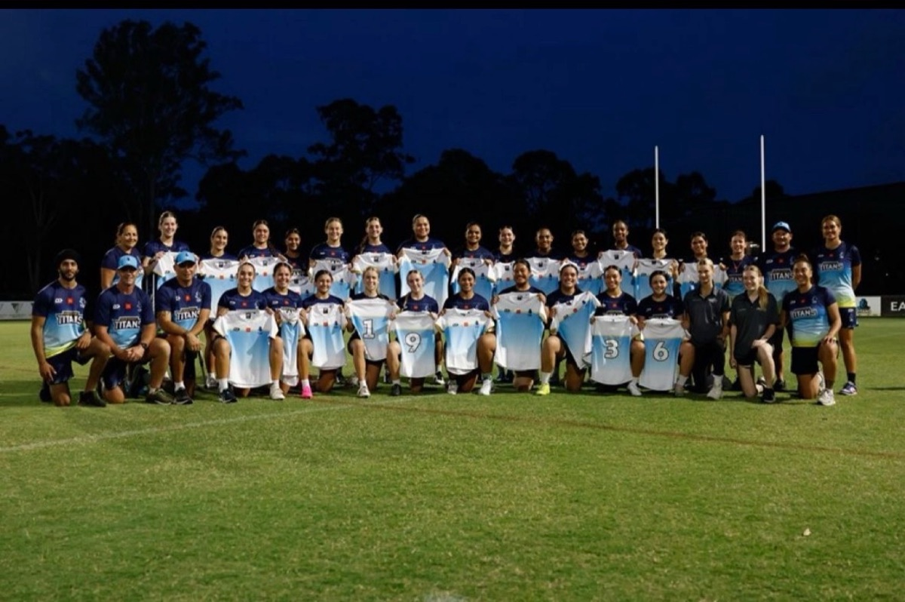
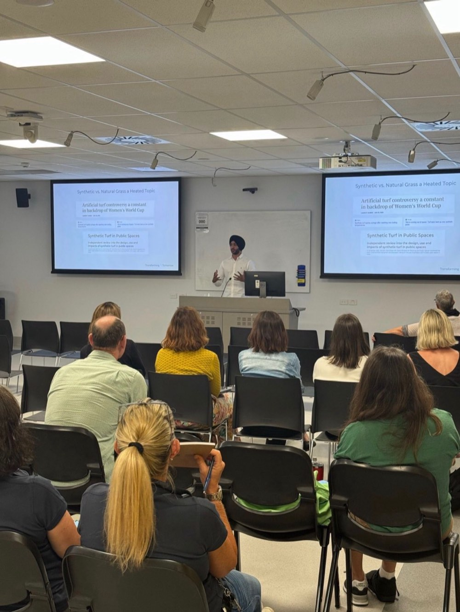
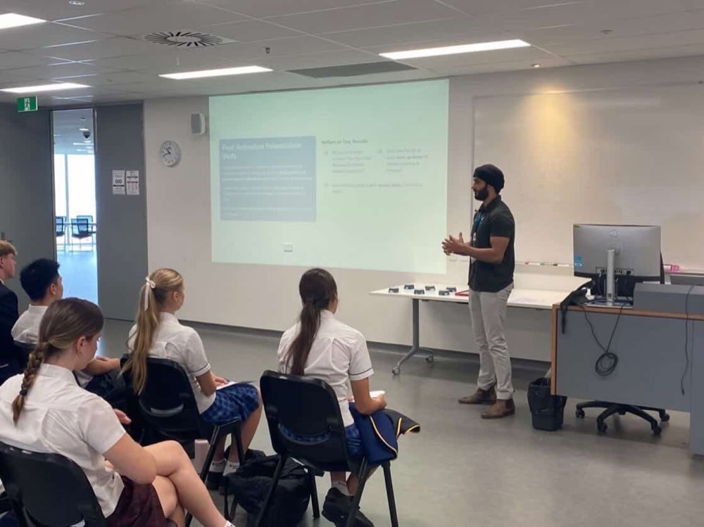
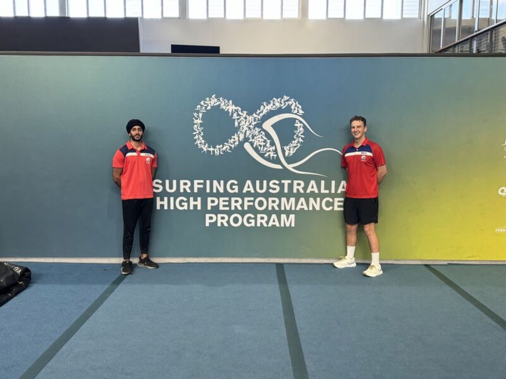
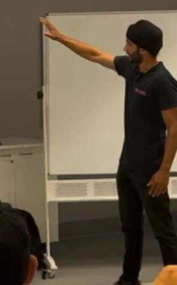

Gold Coast · Coaching athletes across Australia
Elite coaching for aspiring athletes chasing the professional level, and Longevity Performance training for adults who want to stay strong, capable and independent. Both are built on the sports science used inside Australia's elite sporting environments.
Two ways to train

For athletes
You're an aspiring or competitive athlete who wants to train like a professional, with individualised strength & conditioning, GPS-driven programming and a clear pathway to the next level.
Explore elite coaching →
For adults & professionals
You want to stay strong, fit and independent for decades to come, through assessment-based, coached training that treats ageing with the same rigour we train athletes.
Explore longevity →The philosophy
Most athletes train hard. Few train right. The difference between good and elite isn't effort. It's precision: the right load, at the right time, measured and adjusted with real sports science. That's what I bring to your corner.
Every program is built on sports-science research, not gym-floor folklore.
Your sport, your position, your body, your calendar. Never a copy-paste plan.
GPS and load data turn guesswork into objective, professional decisions.

Elite Coaching · For athletes
Individualised strength & conditioning to build speed, power and durability, periodised around your competition calendar.
GPS and load monitoring, data analysis and clear reporting to manage workload and reduce injury risk.
Remote coaching and custom programs for athletes anywhere in Australia, with regular check-ins and review.
Long-term development for junior athletes, building movement quality and physical literacy the right way.
Pre-season planning and periodised conditioning for clubs, academies and representative teams across all codes.
Structured return-to-play conditioning that bridges rehab and competition, so you come back stronger than before.
New Longevity Performance
The same sports science I use to develop elite athletes, applied to the biggest performance challenge of all: ageing well. Most longevity clinics test your blood, hand you a report and tell you to exercise more. Testing is not the intervention. Training is. Longevity Performance is a training-first approach to extending your healthspan.
A physiological baseline through validated testing: strength, cardiorespiratory fitness, balance and body composition.
Structured, individualised training as the primary intervention, with expert coaching embedded throughout.
Quarterly reassessment tracks objective physiological change, and your programme evolves with you.
Foundational assessment and coached group training sessions, designed for those beginning their longevity training journey.
Individualised programming, regular reassessment and dedicated coaching for those seeking measurable physiological progress.
Comprehensive concierge-level service with priority scheduling, advanced testing and fully bespoke programme design.
The goal isn't simply to live longer. It's to live better, for longer. Physical capacity is the foundation of everything.


Dr Gurpreet Singh, Sport Scientist & S&C Coach
The coach
I'm a sport scientist and strength & conditioning coach who lives between the research and the training floor. As a PhD graduate and university lecturer in exercise physiology, motor learning and strength & conditioning, I bring an evidence-based edge most coaches simply can't.
I've worked inside elite environments including the Gold Coast Titans NRLW, the Sydney Swans Academy, the NRL RISE program and the Canterbury-Bankstown Bulldogs, managing GPS data, on-field conditioning and athlete wellbeing at the highest level.
My mission is to bring that professional standard to the athletes hungry to reach it.
Work with meReady to train like a professional? Let's build the plan that gets you there.
Book a consultationCommon questions
Both. I work with aspiring and junior athletes building the right foundations, right through to representative-level athletes fine-tuning performance.
Yes. I coach in person on the Gold Coast and deliver online programming and remote coaching to athletes anywhere in Australia.
Every program is built on sports-science research and individualised to your sport, position and calendar, then adjusted using GPS and load data, not guesswork.
Yes, long-term youth athletic development is a core focus, building movement quality and physical literacy safely and age-appropriately.
A training-first longevity program for adults. We assess your physiological baseline, coach you through structured training, and reassess quarterly, because training, not testing, is what actually extends healthspan.
Most longevity clinics centre on blood panels, genetic testing and biological-age reports, then hand you generic advice: exercise more, eat better, sleep more. Here, testing guides the decisions but structured, coached training is the actual intervention.
You start with a physiological baseline across strength, cardiorespiratory fitness, balance and body composition, then reassess quarterly. Your programme is updated from those results, so you see objective change rather than guessing.
Not at all. Longevity Performance is built for adults 40+, busy professionals, retirees and former athletes, at any starting point. Every program begins with an assessment and is scaled to you.
Send an enquiry through the form below with your goals, and I'll be in touch to talk through how we'd work together.
Get started
Whether you're chasing the next level in your sport or want to stay strong and capable for decades to come, tell me about yourself and I'll be in touch to talk through how we'd work together.